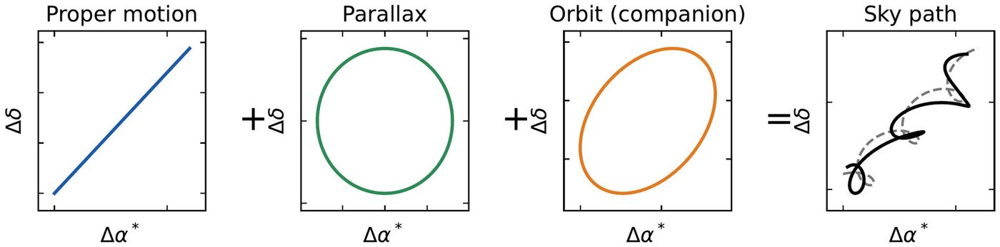
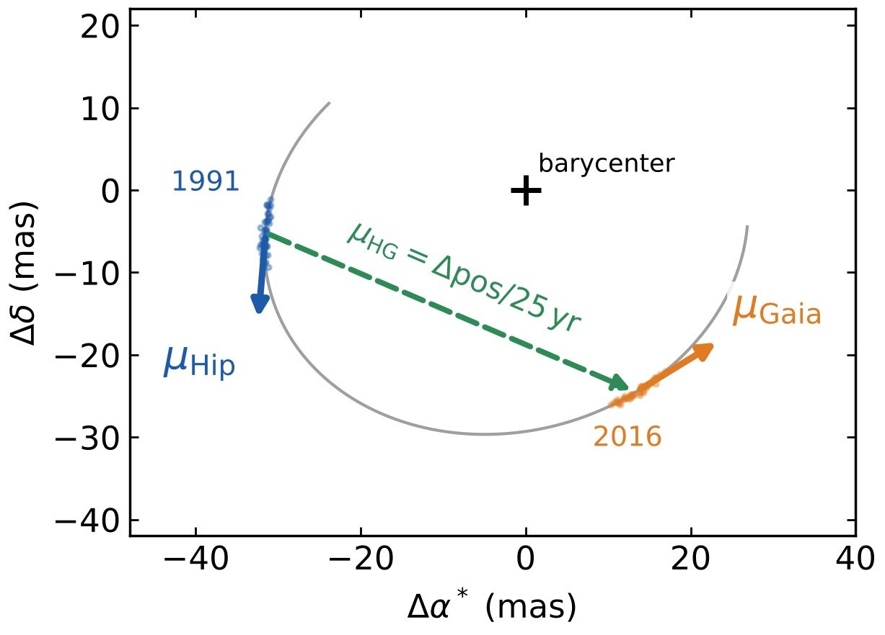
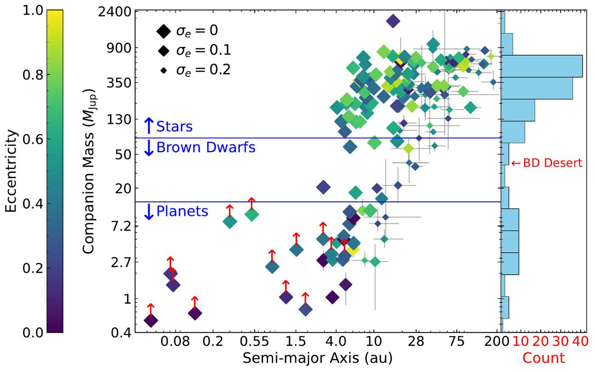
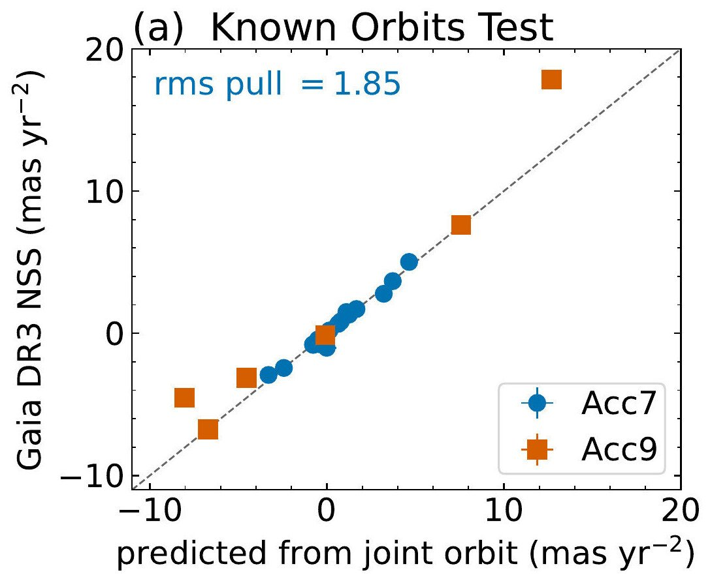
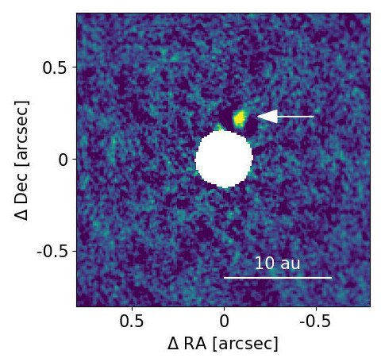
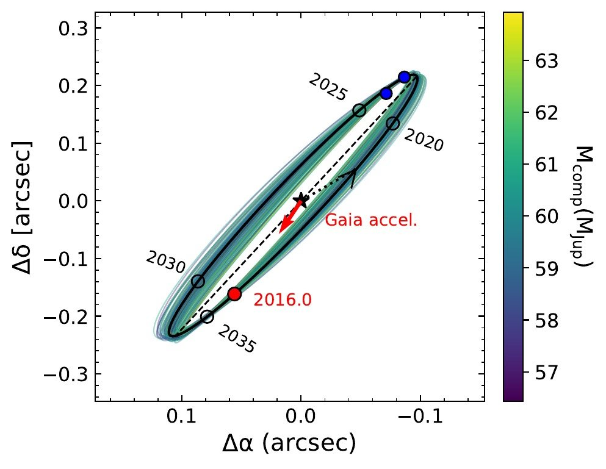
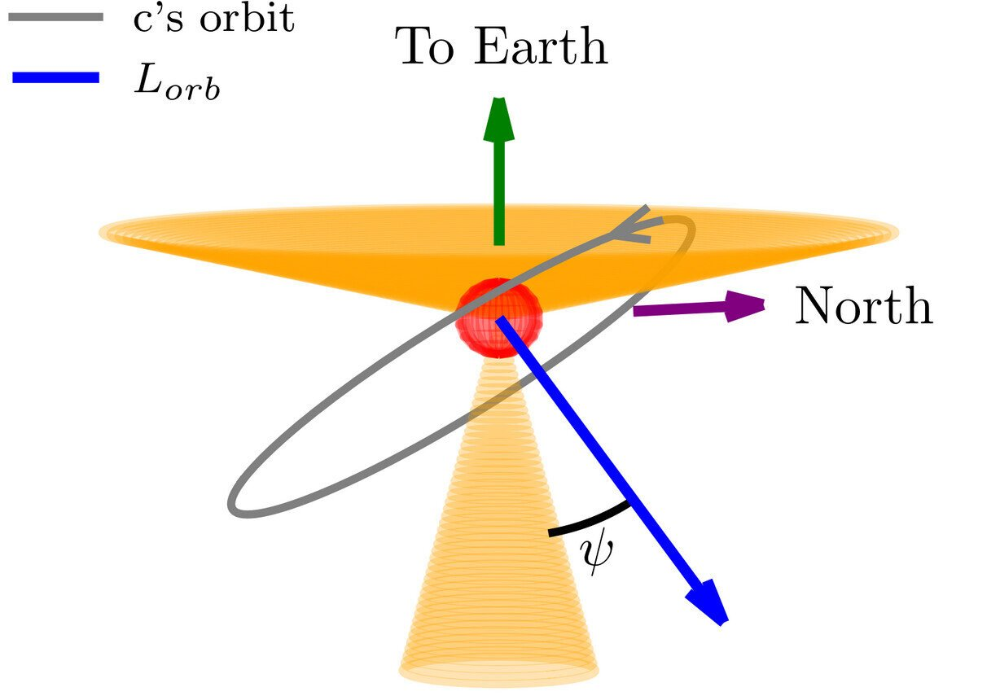

Research
I measure dynamical masses and 3D orbits for giant planets, brown dwarfs, and stellar companions by fitting absolute astrometry, radial velocities (RVs), and direct imaging together, and I use those orbits to ask how cold giants form. The reflex motion of the host star over the 25 years between Hipparcos and Gaia, or within Gaia alone, turns these methods into one joint fit that yields a dynamical mass and a 3D orbit. RVs alone give only the minimum mass M sin i, and imaging gives a mass that depends on cooling models and on the age of the system. A dynamical mass needs neither.

Full publication list: ADS Library · ORCID · CV
Orbits and masses at catalog scale
Hipparcos measured about 100,000 bright stars 25 years before Gaia measured them again. The change in proper motion over that baseline gives the star's acceleration in an inertial frame: the Hipparcos–Gaia Catalog of Accelerations (HGCA). My first-author catalog combines Hipparcos–Gaia astrometry with archival Keck/HIRES and ESO/HARPS RVs, and relative astrometry where available, to derive masses and orbits for 156 companions: 111 stellar companions, 12 brown dwarfs, and 33 planets, all from joint orbit fits with orvara. The catalog shows the brown-dwarf desert at 25–65 MJup in both mass and mass ratio, out to separations of ≳10 au.
With Venner and Pearce, I recovered the white dwarf HD 38230 B, first detected in Keck/NIRC2 imaging, on a ≈1,400-year orbit. We used the imaging, more than 25 years of RVs, and Hipparcos–Gaia astrometry: the extreme test of the joint method. At 21 pc, it is the 11th-nearest Sirius-like system known.


- An, Q., Brandt, T. D., Brandt, G. M., & Venner, A. 2025, ApJS, 280, 61 — Orbits and Masses for 156 Companions from Combined Astrometry and Radial Velocities, and a Validation of Gaia Non-single-star Solutions
- Venner, A., Pearce, L. A., An, Q. (co-first author), et al. 2026, arXiv:2607.28720, submitted — A New Sirius-like System at Only 21 Parsecs: An Elusive White Dwarf Companion to the Nearby K-dwarf HD 38230
- Venner, A., An, Q., et al. 2024, MNRAS, 535, 90 — HD 28185 Revisited: An Outer Planet, Instead of a Brown Dwarf, on a Saturn-like Orbit
Verifying Gaia
Gaia DR4 will release epoch astrometry for every source over a 66-month baseline, along with orbital solutions for thousands of substellar companions. Gaia's orbits are the sample of the coming decade, and they have to be verified before they can be trusted. The catalog orbits are far better constrained than Gaia DR3's 34-month baseline allows, so they serve as an external truth set. I have tested DR3 in two independent ways.
The Known Orbits Test predicts Gaia's accelerations from orbits fit independently of its non-single-star solutions. I propagated each posterior through Gaia's scanning law with htof and fit Gaia's own seven- or nine-parameter model. For the 11 systems with DR3 acceleration solutions, predicted and measured accelerations agree overall, with a median offset of 1.85σ and a tail extending to ≈10σ, so DR3's uncertainties are modestly underestimated. The three systems with DR3 orbital solutions are all spurious: the pipeline's period grid stops at twice the baseline, so an orbit near or beyond it is an artifact of the grid, not a measurement.
The Imaged Companions Test bounds Gaia's accelerations with resolved companions. I cross-matched all 338,215 Gaia DR3 acceleration solutions with the Washington Double Star catalog. A companion of mass M2 at projected separation ρ sets a Newtonian ceiling on the acceleration Gaia can see, GM2/ρ2. For 98% of systems the measured acceleration exceeds that ceiling more than tenfold, so the signal comes from a closer, unresolved companion. Of the plausible wide binaries, 77% have accelerations pointing at their companions, against 50% by chance.
These are the two tests I will run on DR4. Rather than adopt Gaia's solutions, I will refit them, with an empirical noise model, continuous period sampling, and model comparison by Bayesian evidence.

- An, Q., Brandt, T. D., Brandt, G. M., & Venner, A. 2025, ApJS, 280, 61 — Known Orbits Test
- An, Q., et al., in prep. — Imaged Companions Test
Orbits from Gaia alone
Most Gaia sources have no Hipparcos counterpart, and most M dwarfs are among them. For many of these stars, Gaia DR3 fits accelerations of its own. A 7-parameter solution adds an acceleration to the five parameters of a single star, and a 9-parameter solution also adds a jerk. I built a Gaia-only framework into orvara that uses Gaia's own acceleration and jerk terms in place of Hipparcos–Gaia, with the error inflation from the Known Orbits Test applied.
With the Subaru/IRD team, I applied it to J1446B, a late-T dwarf imaged with Keck/NIRC2 around a mid-M dwarf at ≈17 pc. Combining the IRD RVs, the imaging, and the Gaia DR3 acceleration gives 59.8 MJup at ≈4.3 au: the first application of Gaia accelerations to the orbit analysis of a real companion (JHU news). For J1534B and J2043B, both around M5 dwarfs, a joint fit of IRD RVs and Gaia DR3 acceleration solutions gives 41.7 and 31.2 MJup. These companions lie in the middle of the brown-dwarf desert in mass, yet at mass ratios of 0.2–0.3, far above the mass-ratio desert near 0.03. Around M dwarfs the two axes separate, which can tell whether the desert is set by mass or by mass ratio.


- Uyama, T., Kuzuhara, M., Beichman, C., …, An, Q., et al. 2025, AJ, 170, 272 — Direct Imaging Explorations for Companions from the Subaru/IRD Strategic Program II; Discovery of a Brown-dwarf Companion around a Nearby Mid-M-dwarf LSPM J1446+4633
- Takarada, T., An, Q., Uyama, T., et al., submitted — J1534B and J2043B
Spin–orbit architecture
The spin–orbit angle ψ is the angle between a companion's orbit and its star's spin. Beyond a few au, tides cannot reset it, so it records how the system formed. For HAT-P-11, I made the first measurement of the spin–orbit angle of its outer giant planet from a joint fit of astrometry and activity-corrected RVs. I showed that the star, the inner super-Neptune, and the outer super-Jupiter are all mutually misaligned, suggesting a complex dynamical history, which Lu et al. explore through scattering followed by tides and migration. With Prof. Songhu Wang, I am now extending the measurement to my catalog. Our population pipeline combines TESS rotation periods, spectroscopic v sin i, and SED-based radii into stellar inclinations, and uses them in a hierarchical model (in prep).

- An, Q., Lu, T., Brandt, G. M., Brandt, T. D., & Li, G. 2025, AJ, 169, 22 — Significant Mutual Inclinations Between the Stellar Spin and the Orbits of Both Planets in the HAT-P-11 System
- Lu, T., An, Q., Li, G., et al. 2025, ApJ, 979, 218 — Planet–Planet Scattering and von Zeipel–Lidov–Kozai Migration—The Dynamical History of HAT-P-11
Software
I co-develop and maintain the two public codes that do the fitting.
- orvara (Brandt et al. 2021, AJ, 162, 186) — Fits RVs, Hipparcos–Gaia absolute astrometry, and relative astrometry from imaging together, and samples the orbit with parallel-tempered MCMC.
- htof (Brandt, Michalik & Brandt 2021, AJ, 162, 230) — Hipparcos and Gaia measure in one dimension, and a catalog proper motion is a fit to those scans. htof uses the Hipparcos intermediate data and the Gaia scanning law to fit the same model the missions used, so a trial orbit can be compared directly with the catalog values.